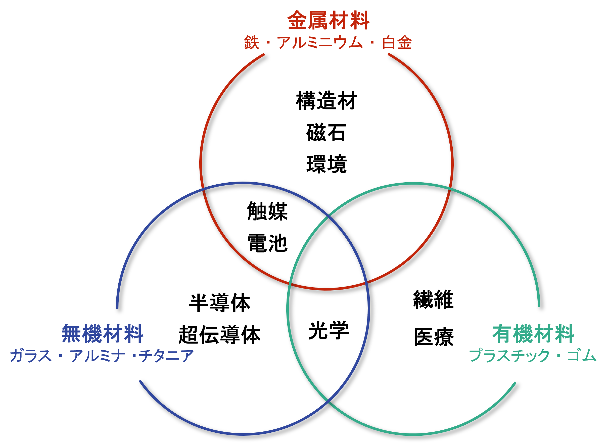
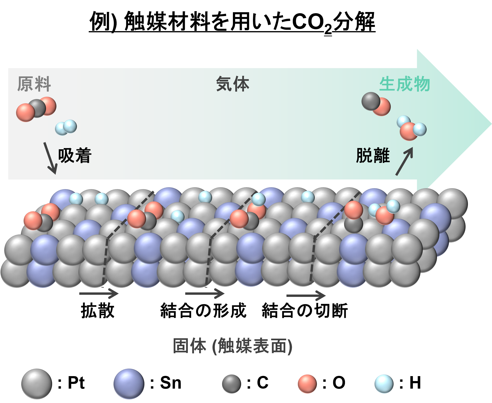
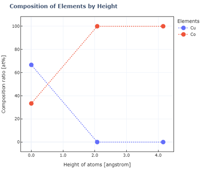

1. 導入
SurfQitは 触媒などの固体表面化学に関する材料の開発に向けた、材料表面モデリングを行うソフトウェア です。 このチュートリアルでは、SurfQitを使用する上で必要な知識を学ぶことができる教材となります。
1.1. 本チュートリアルの対象読者と到達点
本チュートリアルの対象読者は、触媒などの固体表面化学に関する材料の開発に携わる計算研究者および実験研究者となります。 また、本チュートリアルの到達点としては以下を想定しています。
理論シミュレーションにより固体表面化学を研究する方が、自身の研究の中で複雑な材料に対しても計算モデルを作成できる。
実験的に固体表面化学を研究する方が、自身の研究に役立てることができる計算モデルを作成できる。
1.2. 固体表面化学とは
固体表面化学とは、固体の表面における化学反応や物質移動を研究する分野のことを指します。主に 触媒材料・吸着材料・電極材料・センサー材料 は固体表面で生じる化学現象を利用した材料であり、固体表面化学を基により高性能な材料や新しい材料が研究開発されています。
1.3. 固体表面化学における表面モデリングの重要性
固体表面化学に関する材料はそれぞれ様々な性能を持ちますが、これらの性能の良し悪しは材料構造のマクロな違い(形態など)とミクロな違い(原子配列・電子構造など)からもたらされています。 そのため、材料性能の評価は材料構造を理解することから始まります。 とりわけ、固体表面で化学反応が進行するため、気体ー固体界面や液体ー固体界面となる 材料表面のミクロな構造を理解することが重要 となります。
しかしながら、実験的に材料表面のミクロな構造を観察することは難しいことから、実際の表面構造を原子レベルに再現する 「表面モデリング」 が必要とされています。
1.4. 表面モデルの利用先
表面モデリングにより構築した表面モデルは計算研究と実験研究の両方で利用することができます。 計算研究の場合、量子化学計算やシミュレーションを行う際のインプットデータとして表面モデルを用いることができます。 また、実験研究の場合、赤外分光やX線分光などの構造分析の参照データとして表面モデルを用いることができ、効率的に表面構造から材料特性を説明することができます。
表面モデリングには様々な方法があり、SurfQitでは 量子アニーリングを利用した表面モデリング方法により表面モデルを精度高く作成 することができます。
次の項では表面モデリング方法の種類と分類について触れていきます。